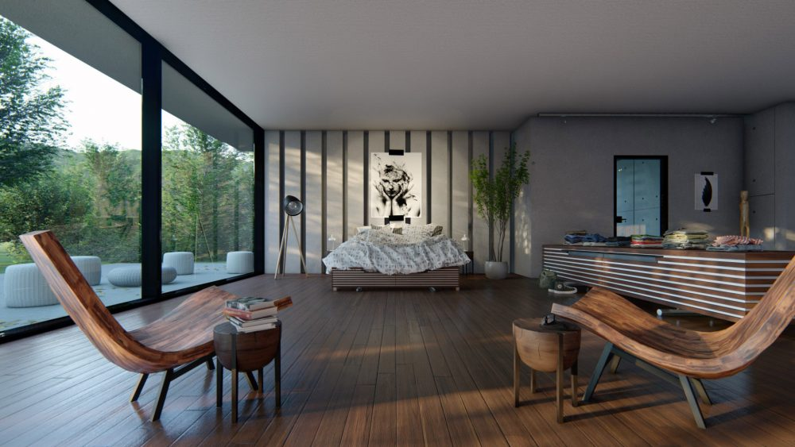
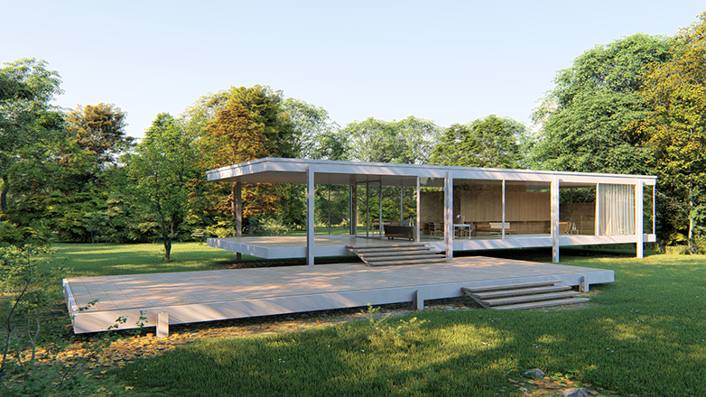
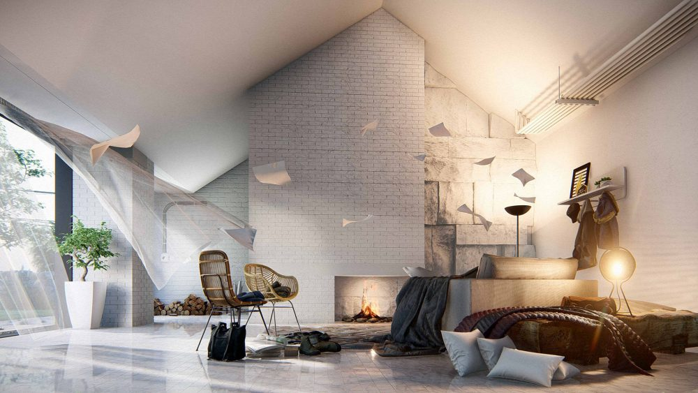
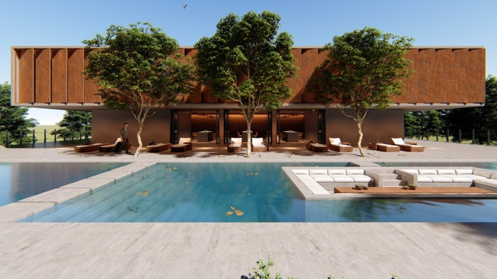
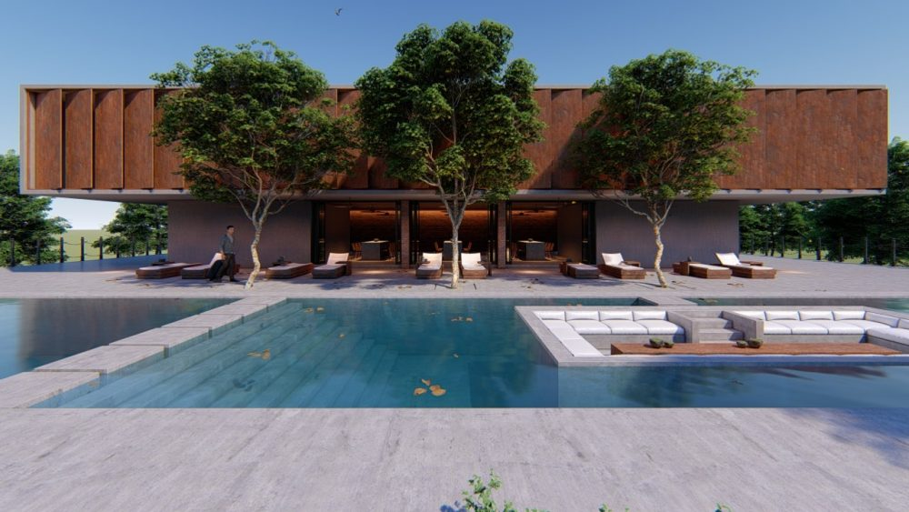
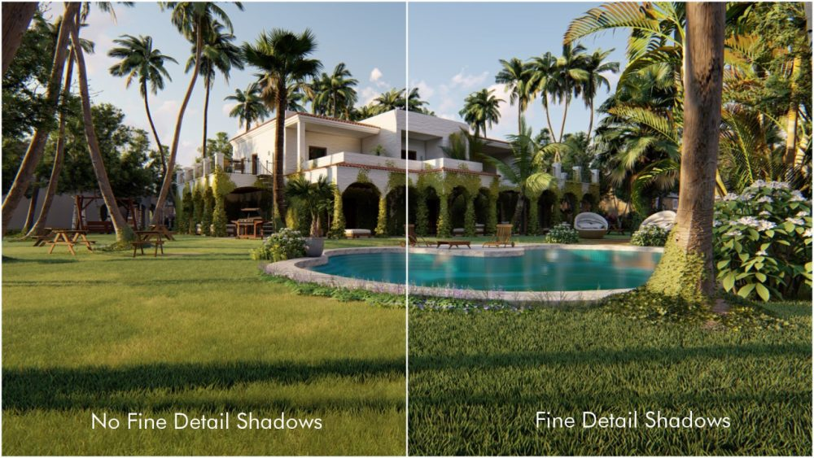

Desde su salida en el año 2010 con su versión 1.0, Lumion se ha popularizado entre los diseñadores y arquitectos, un software muy potente que ofrece principalmente renderizados y armados de escenas de manera muy sencilla y de mucha calidad. Hoy tenemos ya disponible su versión 8 y aquí te mencionamos algunas de sus novedades.
Novedades
El proceso de renderizado ahora es mas potente, tanto en calidad, como en rapidez si hardware tenemos, un claro ejemplo, como lo muestra su web oficial, es el renderizado de La casa Farnsworth renderizada en solo 8 segundos en la mayor calidad posible con una tarjeta de gráfica: NVIDIA GeForce GTX 1080.
Esta calidad se pudo lograr, gracias a que Lumion 8 ha dado el gran salto hacia el fotorealismo.. Y esto no es todo, además de ello han agregado 3 tecnologías: Estilos, Sky Light y Sombras suaves y detalladas.
Estilos
Para acceder a esta herramienta debes hacer lo siguiente:
El botón Estilos incluye:
- Realista
- Interior
- Amanecer
- Daytime
- Noche
- Nublado
- Boceto a color
- Acuarela
Aquí te dejamos un ejemplo de cual es el resultado aplicando lo mencionado anteriormente.
Sky Light
Esta herramienta aumenta la sensación realismo, profundidad y mejora el ambiente.El efecto Sky Light es un avanzado simulador para suavizar y mejorar la luz ambiental de la escena.
Utilizando este estilo, el cielo se convierte de repente en una fuente de luz extraordinariamente precisa, y su efecto es tan sorprendente como cómodo.
Combinado con “Suavizado de sombras” y “Sombras de detalles” se fortalece el realismo y fortalece la interacción de los elementos. Observa como el follaje y los árboles son más fotorrealistas, y descubre cómo las personas, edificios y paisajes encajan a la perfección en el modelo.
Te dejamos un ejemplo sin aplicar Sky Light.
Luego de aplicar Sky Light.
Sombras suaves y detalladas
La función Sombras suaves y detalladas, se encuentra en la parte de Efectos de Sombra en el modo de foto o vídeo, y tiene un impacto enorme en la calidad visual y realismo tanto en interiores como exteriores.
Por ejemplo, cuando se trata de objetos pequeños, como hierba o las hojas de un árbol, la tecnología de las sombras suaves y detalladas entra en funcionamiento y moldea esas sombras, mejorando el impacto sensorial de los materiales y objetos.
Concepto de renderizado con el efecto Boceto “hecho a mano”
Situado dentro de los efectos Sketch en el modo foto y vídeo, el efecto Boceto “hecho a mano” transforma los edificios y espacios en renders conceptuales y artísticos resaltando los esquemas, detalles estructurales y construyendo fachadas.
Añadir el efecto Boceto no solo ayuda a comunicar las tres dimensiones del edificio, sino que también guía la imaginación del espectador para el resultado final. Este efecto funciona muy bien con otros efectos de vídeo o foto
La web oficial de Lumion nos ofrece el siguiente ejemplo de uso: Si tienes un concepto para mostrar a tu jefe o clientes, pero no tienes tiempo para mejorar el render y aumentar el nivel de realismo, puede añadir instantáneamente dos tipos de bocetos desde el botón Estilos, incluyendo:
Estilo Boceto a Color
Estilo Acuarela
Te dejamos el link a su web oficial :